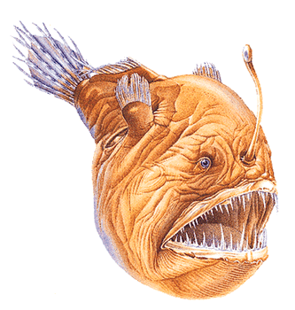

Angler fish entice their prey into their large mouths by means of a fishing rod – a modified dorsal ray with a fleshy lure at its tip. The female of this species (13 cm/5 in long) is very much larger than the male (4 cm/1.75 in long).